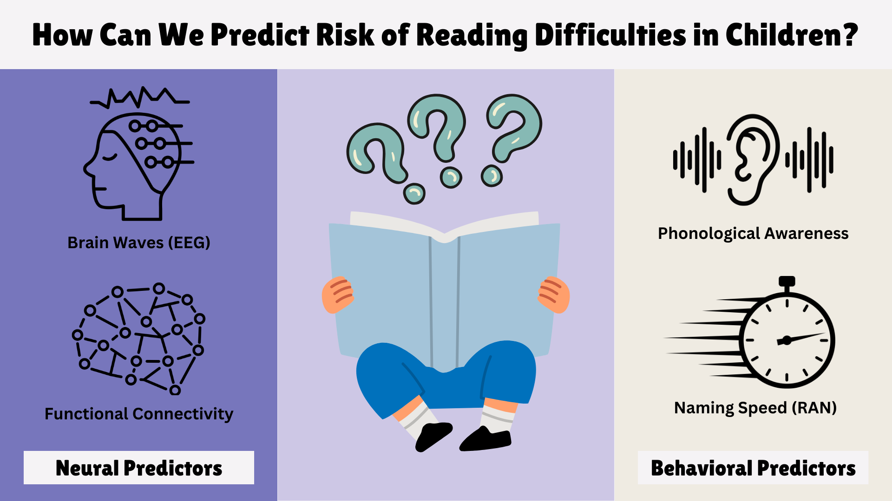

About
Hello! My name is Jiyoon Kim, and I'm a Ph.D. student in Communication Sciences and Disorders at Northwestern University. I am a member of the Language, Education, and Reading Neuroscience (LEARN) Lab, advised by Dr. Elizabeth Norton.
I completed a M.A. in Non-Clinical Communication Sciences at Northwestern University, and I completed B.A.s in Linguistics and Psychology at Seoul National University in Seoul, South Korea.
My research uses behavioral and computational methods to study reading development, reading difficulties, and the cognitive processes underlying reading in the brain. I am especially interested in identifying early markers of dyslexia and improving the assessment of reading ability, with the goal of developing more accurate and efficient tools to predict future reading outcomes. [Link to CV]
Research Interests

- Early cognitive and behavioral predictors of reading difficulties in children
- Psychometric assessment and measurement of language and reading skills
- Reading development and reading-related cognitive processes
Education
| 2023–present | Ph.D. in Communication Sciences and Disorders, Northwestern University |
| 2023–2025 | M.A. in Non-Clinical Communication Sciences, Northwestern University |
| 2019–2023 | B.A. in Psychology, Seoul National University |
| 2019–2023 | B.A. in Linguistics, Seoul National University |
News
- [Nov 04, 2025] I submitted a preprint of my manuscript on RAN pause time variability to PsyArXiv.
- [Sep 16, 2025] I successfully defended my qualifying research project (QRP) and became a PhD Candidate!
- [Jul 17, 2025] I presented a poster at the Society for the Scientific Study of Reading conference in Calgary, Canada.
Publications
Manuscripts Under Review
| under review |
Kim, J., Harriott, E., Spencer, M., Gaab, N., Gabrieli, J. D. E., & Norton, E. S.
Beyond total time measures of rapid automatized naming (RAN): Do pause time variability and alternate task lengths improve prediction of future reading?
Scientific Studies of Reading |
Preprints
| 2025 |
Kim, J., Harriott, E., Spencer, M., Gaab, N., Gabrieli, J. D. E., & Norton, E. S.
Beyond total time measures of rapid automatized naming (RAN): Do pause time variability and alternate task lengths improve prediction of future reading?
PsyArXiv. [preprint] |
Conference Presentations
| 2025 | Kim, J., Harriott, E., Gaab, N., Gabrieli, J. D. E., & Norton, E. S. Item-level pause time and pause time variability in kindergarten rapid automatized naming as a predictor of future reading ability: A multilevel analysis. Poster presented at the Society for the Scientific Study of Reading, Calgary, Canada. |
| 2024 | Manning, B., Mon, S., Nikolaeva, J., Choi, S., Licht, J., Holubecki, A., Kim, J., Wakschlag, L., & Norton, E. S. Language learning in sync: How child EEG power and parent–child synchrony during naturalistic interaction relate to child language ability. Poster presented at FIT’NG, Baltimore, MD. |
Research Projects
| 2025–present |
Language, Education, and Reading Neuroscience (LEARN) Lab,
Northwestern University (PI: Dr. Elizabeth Norton)
Project Lead on parent–child language sample transcription and RAN pause-time annotation projects; supervised and trained nine undergraduate research assistants |
| 2023–present |
Language, Education, and Reading Neuroscience (LEARN) Lab,
Northwestern University (PI: Dr. Elizabeth Norton)
Behavioral analysis of rapid automatized naming (RAN); development of Python pipelines using Whisper for automated child speech transcription |
| 2024 |
Reading, Education, and Development (READ) Lab,
Northwestern University (PI: Dr. Mercedes Spencer)
Meta-analysis of executive function skills in children with and without specific reading comprehension deficits |
| 2022 |
B.A. Honors Thesis (Linguistics), Seoul National University
Title: The role of phonological processing on the comprehension of foreign-accented speech |
| 2023 |
B.A. Honors Thesis (Psychology), Seoul National University
Title: The relationship between reading fluency and attentional control in bilinguals reading code-switched text |
| 2019–2023 |
Brain & Humanities Lab, Seoul National University (PI: Dr. Sung‑Eun Lee)
EEG experiment administration and ERP analysis (MMN, N400, P600) |
Awards & Fellowships
| 2025 | Northwestern University Conference Travel Grant ($800) |
| 2024–2025 |
Northwestern University John D. and Lucille H. Clark Scholarship
Partial stipend and tuition support awarded by faculty. |
| 2023 |
Seoul National University President’s Award
Highest-ranking graduate in the College of Humanities (GPA 4.0/4.0). |
| 2022–2023 |
Kwanjeong Scholarship ($22,000)
National fellowship awarded for academic excellence and research potential. |
| 2022 | Seoul National University Best Thesis Award |
| 2021 | Seoul National University Outstanding Paper Award |
Teaching
Teaching Assistant
| Spring 2026 | CSD 490: Adult Neuromotor Speech Disorders |
| Winter 2024, 2025, 2026 | CSD 392: Language Development & Usage |
| Spring 2025, 2024 | CSD 373: Introduction to Learning Disabilities |
| Fall 2024 | CSD 376: Diagnostic & Remedial Approaches for Children with Learning Problems |
| Fall 2023, 2024 | CSD 456: Clinical Neuroanatomy & Physiology |
Guest Lectures
- Reading Development and Disabilities: CSD 392 (Winter 2026)
- Theories of Dyslexia: CSD 392 (Winter 2024)
Undergraduate Research Mentorship
Mentored undergraduate and master’s students on SALT-based language transcription and rapid automatized naming (RAN) pause-time annotation projects (2024–present).